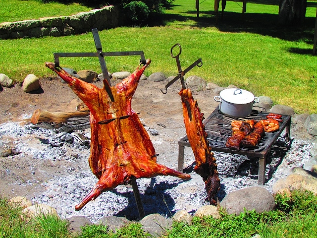
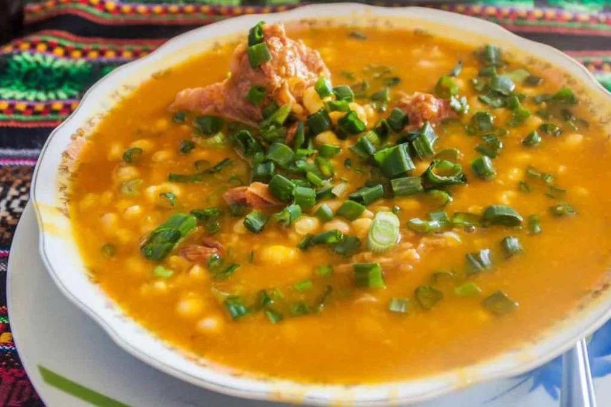
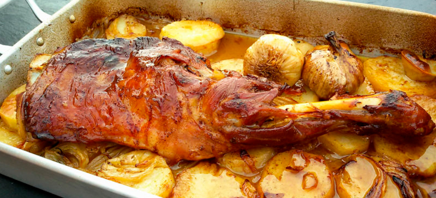
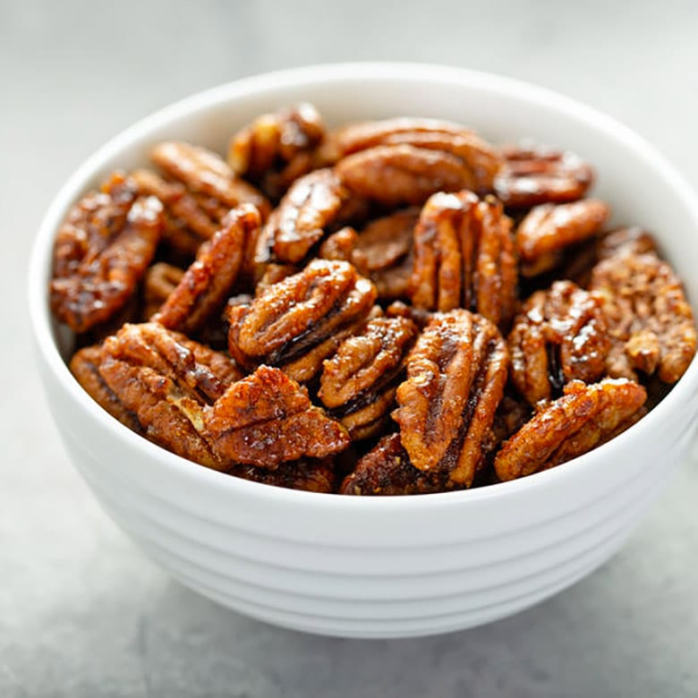

La cocina que cuenta historias
La gastronomía de La Rioja (y especialmente de Chilecito) es sencilla, potente y profundamente ligada a la tierra: cabrito de campo, cabrito al asador, empanadas de carne cortada a cuchillo, humitas, locro con maíz pisado y trigo, y postres con nueces y miel de algarrobo. Todo se cocina con leña o carbón, y los ingredientes son casi siempre locales: aceitunas de primera, quesos de cabra, frutas secas y vinos de altura que maridan perfecto.

Cabrito al asador – plato estrella de la gastronomía riojana
En Chilecito la comida es comunal: se comparte en peñas, asados familiares y fiestas. Los restaurantes y casas de comida casera mantienen recetas de generaciones, sin pretensiones gourmet, pero con sabor inigualable.
Platos y experiencias imperdibles

Empanadas riojanas
Carne cortada a cuchillo (no molida), cebolla, huevo duro, aceitunas, comino y ají molido. Se comen fritas o al horno. En Chilecito las mejores son las de las señoras del mercado o en peñas familiares. Imperdible: pedir "docena mixta" con carne y queso.

Locro riojano
Maíz pisado, porotos, zapallo, chorizo y costilla de cerdo o vaca, cocinado a fuego lento con hierbas locales. Se sirve con salsa picante de ají y cebolla. Tradicional en invierno y en fiestas patrias. En Chilecito hay casas que lo hacen en ollas de barro.

Cabrito al asador
El rey de la mesa riojana. Cabrito de campo (lechal o capón) asado entero a las brasas con sal gruesa y hierbas. Se acompaña con ensalada criolla, papas al rescoldo y vino tinto joven. Se come en asados familiares o en restaurantes como "El Fogón de los Gauchos".

Postres y dulces regionales
Arrope de chañar o tuna, nueces caramelizadas, quesillo con miel de algarrobo, rapadura y quesos dulces. En el mercado municipal o en casas de familia encuentras estos productos artesanales hechos por abuelas locales. Perfectos para llevar de souvenir.
La mejor forma de probar todo: un almuerzo en una peña o una cena en casa de familia que ofrece "comida casera riojana". ¡Preguntá por recomendaciones locales!